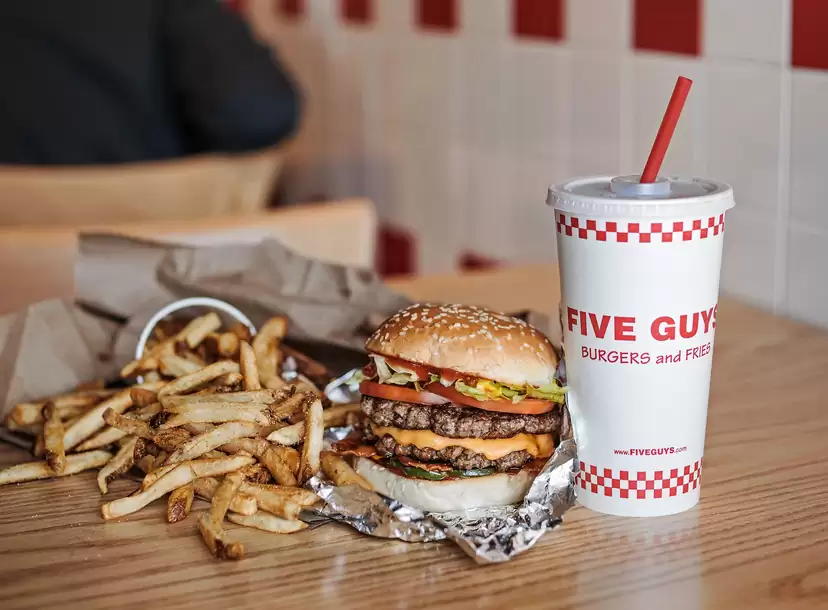
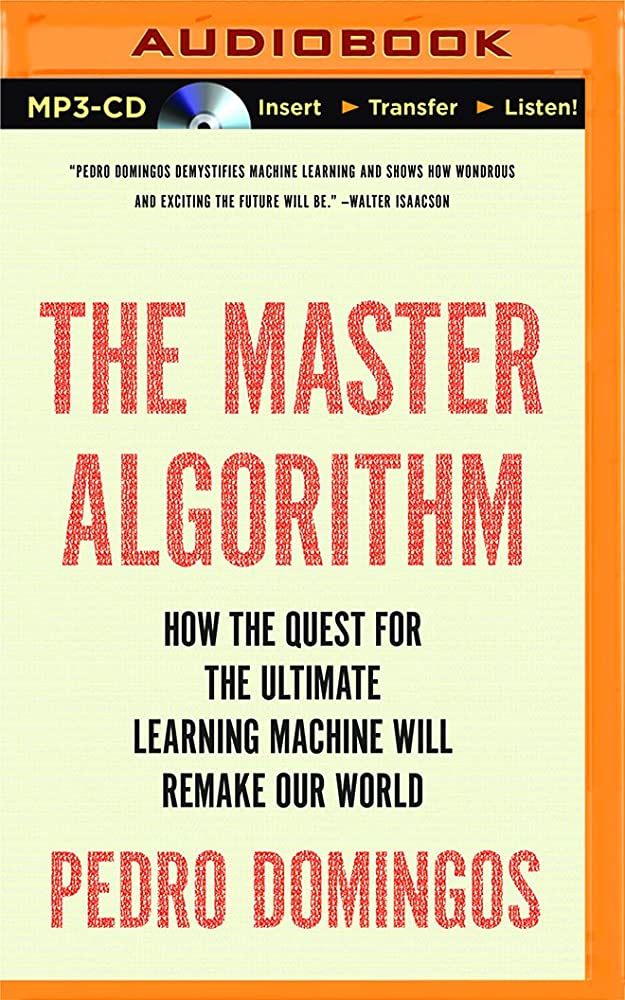
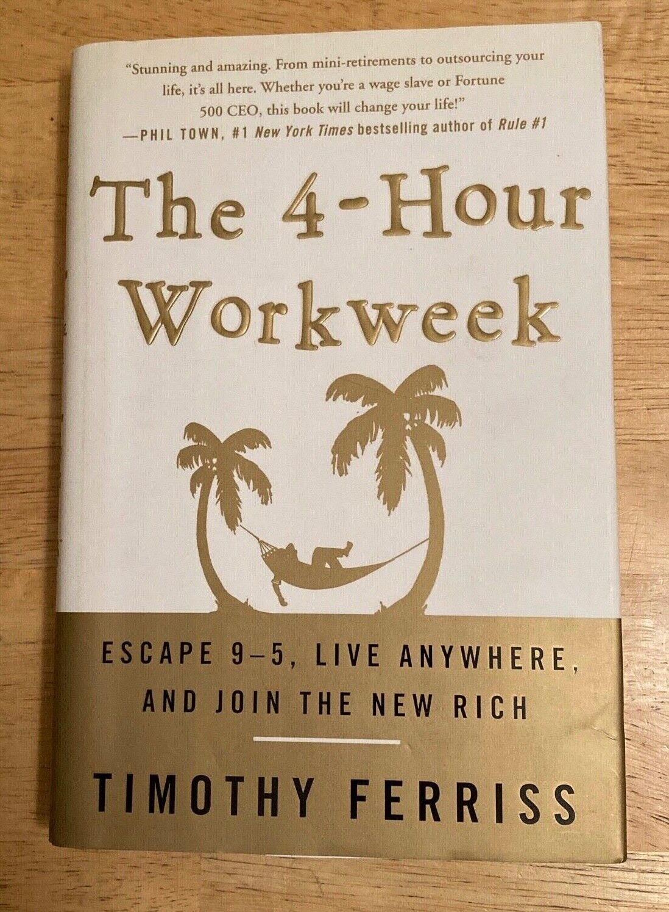

I decided to take this web programming class because I'm fascinated by the world of technology and its impact on our lives. I believe that understanding web programming is crucial in today's digital age, and I want to equip myself with the skills to create engaging websites and develop innovative web applications. Personally, I'm excited about the creative possibilities that come with web programming, such as building interactive user interfaces and implementing dynamic functionalities. I have experience with HTML, CSS, JS, MySQL and I'm familiar with frameworks like React and Angular. I'm eager to expand my knowledge and delve deeper into the world of software development through this class.
Five Guys is my favorite restaurant because of their mouthwatering burgers cooked to perfection, loaded with fresh toppings and served in a warm, toasted bun. The casual and friendly atmosphere, coupled with their generous portion sizes, make dining at Five Guys a satisfying and enjoyable experience. Additionally, their unlimited free toppings and wide selection of customizable options ensure that every visit is a deliciously unique culinary adventure.
My first choice is always the "All The Way" Double Cheeseburger, a tasteful explosion of flavors and textures. I pair it with their uniquely crunchy fries cooked in peanut oil, providing a savory accompaniment. The meal is capped off with a creamy, vanilla milkshake.
| Name | Image | Author | Summary |
|---|---|---|---|
| Sapiens: A Brief History of Humankind | |
Yuval Noah Harari | This book explores the journey of humankind from the earliest humans to the twenty-first century, focusing on our development as a species. |
| The Master Algorithm: How the Quest for the Ultimate Learning Machine Will Remake Our World |  | Pedro Domingos | Domingos discusses the potential of machine learning and posits the existence of a unifying "Master Algorithm" that can derive all knowledge from data. |
| Life 3.0: Being Human in the Age of Artificial Intelligence | Max Tegmark | Tegmark explores the potential futures that may be shaped by the development of advanced artificial intelligence and discusses what we, as a society, can do to ensure the best outcome. | |
| The 4-Hour Workweek |  | Tim Ferriss | Ferriss presents strategies and tools for living a lifestyle of minimal work and maximum leisure, including outsourcing mundane tasks and focusing on passion projects. |